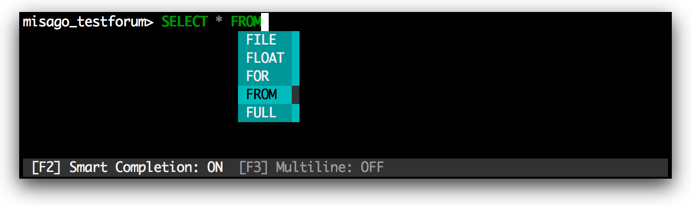
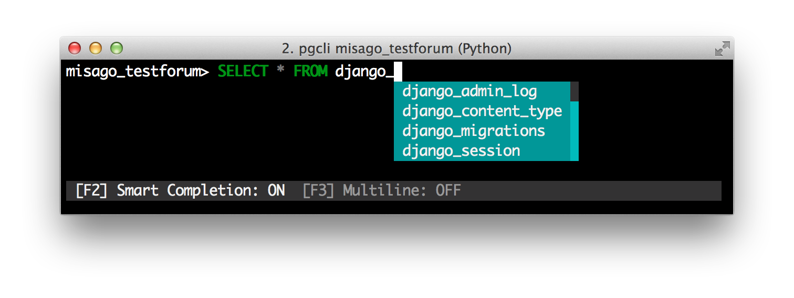
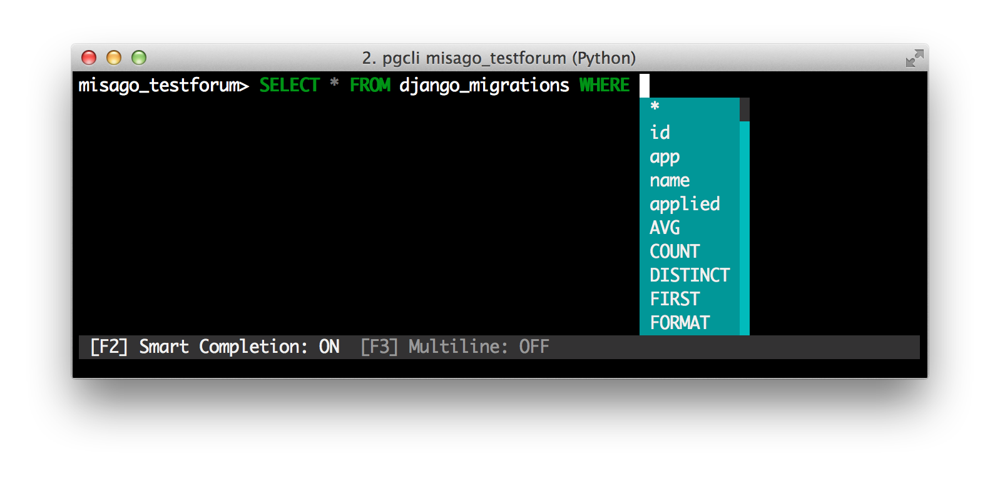
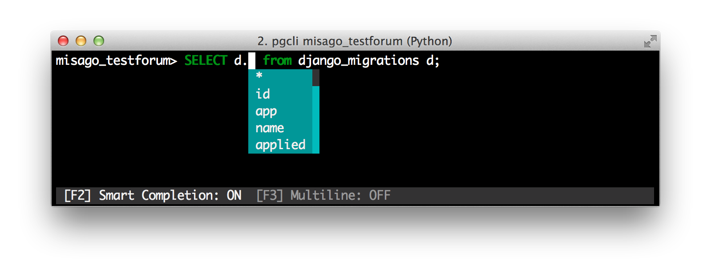
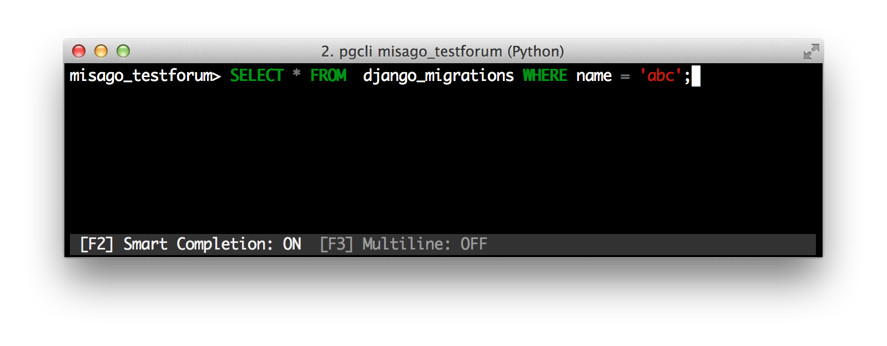
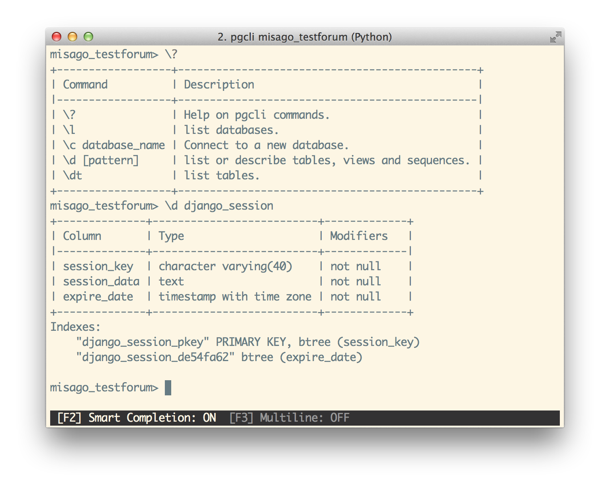
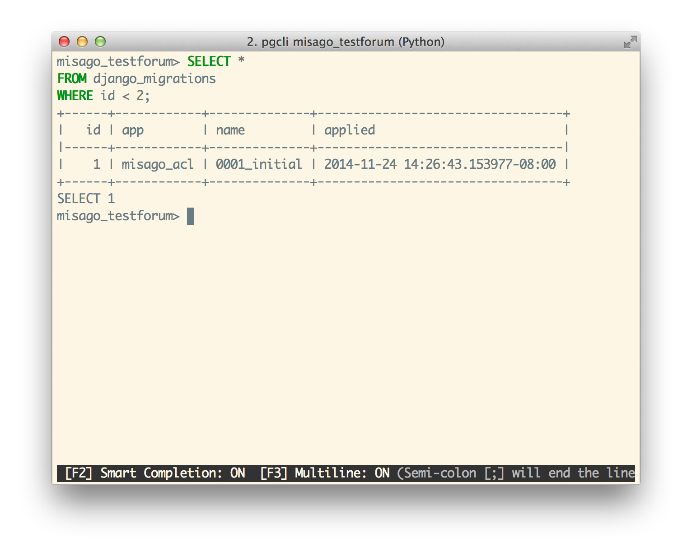
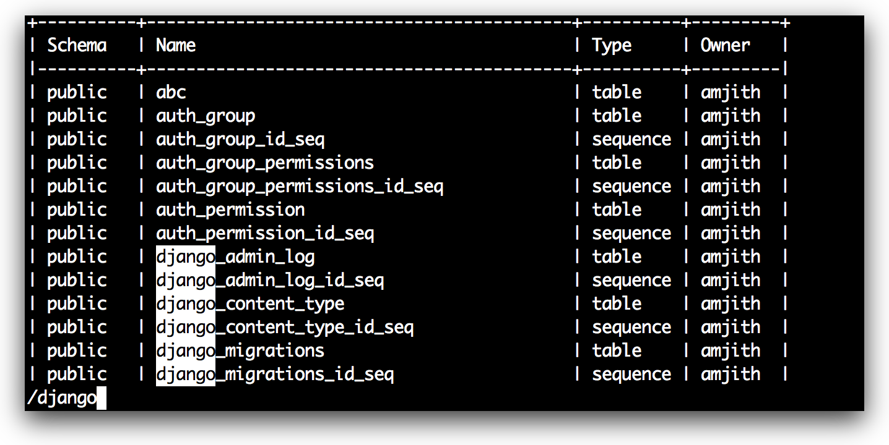

Screenshots
Auto-completion
Simple completions such as keywords and sql-functions.
Smart-completion
Table name completions after the 'FROM' keyword.
Column name completions once a table is recognized.
Alias support
Column completions will work even when table names are aliased.
Syntax-highlighting
Syntax highlighting for sql.
Special commands
Limited support for some of psql's powerful back-slash commands.
Multi-line
F3 key will toggle multi-line support. In multi-line mode a semi-colon is needed to end a command.
Pager
Output of an sql command is automatically piped through less command.
